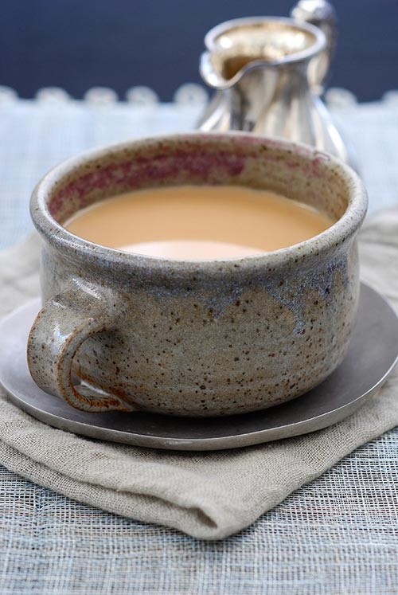

Tea
Home

Description
Chai is a warm and aromatic spiced tea that is popular in many cultures,
especially in Kenya and India.
Ingredients
- 2 cups water
- 1 cup milk
- 2-3 teaspoons tea leaves
- 2-3 tablespoons
- 3-4 crushed cardamon pods
- 1 small cinnamon stick
- 2-3 cloves
- 1 teaspoon grated ginger
- 1-2 black peppercorns
Steps
- In a saucepan, bring 2 cups of water to a boil.
Add the crushed cardamon, cinnamon stick, cloves, grated gonger, and black peppercorns.
Let the spices simmer for 2-3 minutes to release their flavors.
- Add 2-3 teaspoons of tea leaves to the boiling water.
Let it simmer for 2-3 minutes until the tea darkens and absorbs the spices.
- Pour in 1 cup of milk.Add sugar to taste and stir well.
Bring the mixture to a gentle boil, then lower the heat and let it simmer for 2 minutes.
- Turn off the heat and strain the tea into cups using a fine sieve. Serve hot and enjoy!